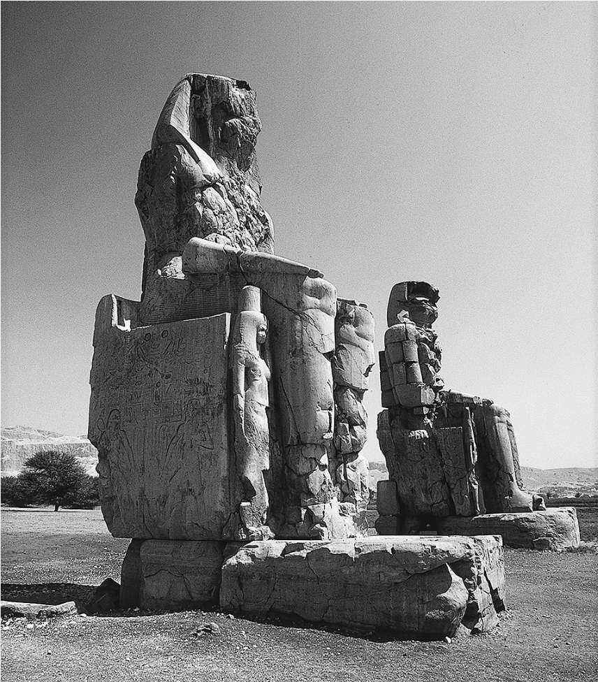
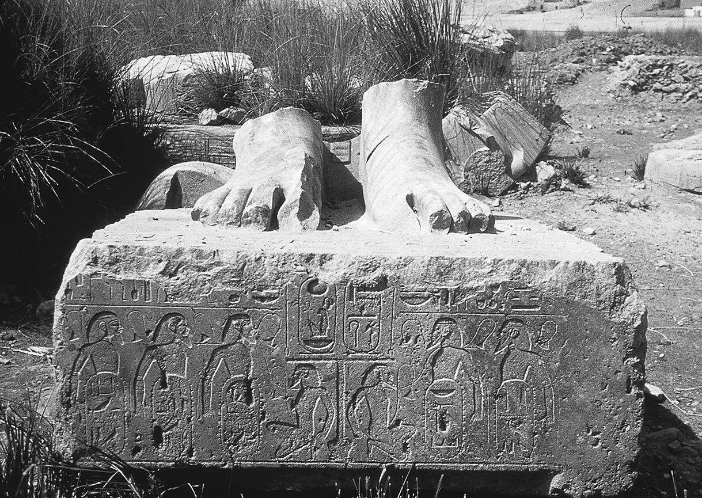
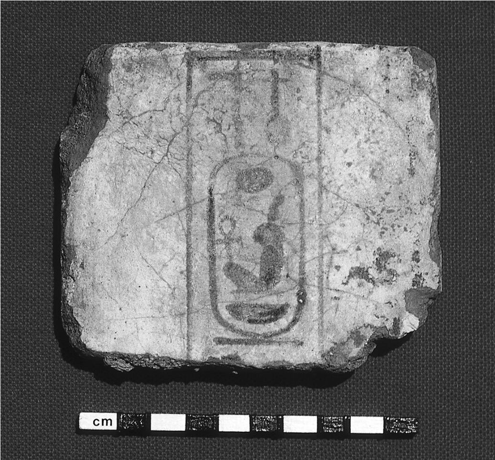

CHAPTER TWO
Towering more than sixty feet high and destined to stand guard for the next thirty-four hundred years, even as the mortuary temple that stood behind them was looted for its magnificent stone blocks and slowly crumbled into dust, the two huge statues standing at the entrance to Amenhotep III’s mortuary temple at Kom el-Hetan were, and still are, erroneously called the Colossi of Memnon as a result of a mistaken identification with Memnon, a mythological Ethiopian prince killed at Troy by Achilles. Each statue depicts a seated Amenhotep III, pharaoh of Egypt from 1391 to 1353 BC. In part because of this erroneous identification, the Colossi were already famous two thousand years ago, visited by ancient Greek and Roman tourists familiar with Homer’s Iliad and Odyssey, who carved graffiti on the legs. One of the Colossi— after being damaged by an earthquake in the first century BC— was known for giving off an eerie whistling sound at dawn, as the stone contracted and expanded with the cold of night and heat of day. Unfortunately for the ancient tourist trade, restoration work during the Roman period in the second century AD finally put an end to the daily “cries of the god.”[96]
However, fascinating as they are, it is not the two Colossi that are critical to our story of important events in the fourteenth century BC, but rather the fifth of five statue bases standing in a north– south row within the boundaries of where the mortuary temple once stood. The temple was located on the west bank of the Nile, near what is now known as the Valley of the Kings, across from the modern city of Luxor. The five bases each held a larger-than-life-sized statue of the king, although they were not nearly as tall as the Colossi placed at the entrance to the temple. The court in which they stood contained almost forty such statues and bases in all.
Each of the five bases, as well as many of the others, is inscribed with a series of topographical names carved into the stone within what the Egyptians called a “fortified oval”—an elongated oval carved standing upright, with a series of small protrusions all along its perimeter. This was meant to depict a fortified city, complete with defensive towers (hence the protrusions). Each fortified oval was placed on, or rather replaced, the lower body of a bound prisoner, portrayed with his arms behind his back and bound together at the elbow, sometimes with a rope tied around his neck attaching him to other prisoners in front of and behind him. This was a traditional New Kingdom Egyptian method of representing foreign cities and countries; even if the Egyptians didn’t actually control these foreign places or were not even close to conquering them, they still wrote the names within such “fortified ovals” as an artistic and political convention, perhaps as symbolic domination.
Together the names on these statue bases formed a series of geo graphical lists that designated the world known to the Egyptians of Amenhotep III’s time, in the early fourteenth century BC. Some of the most important peoples and places in the Near East at that time were named on the lists, including the Hittites in the north, the Nubians in the south, and the Assyrians and Babylonians to the east. Taken as a whole, the lists were unique in the history of Egypt.
But what immediately strikes us is that the list carved by the stonemason on the fifth statue base contained names never before mentioned in Egyptian inscriptions. They were the names of cities and places located to the west of Egypt— strange names, such as Mycenae, Nauplion, Knossos, Kydonia, and Kythera, written on the left front and left side of the base, and with two more names written separately on the right front side of the base, as if they were titles placed at the head of the list: Keftiu and Tanaja.
What was the meaning of this list and what did the names represent? For the past forty years, modern archaeologists and Egyptologists have been debating the significance of the fifteen names found on this statue base, now commonly referred to as the “Aegean List.”
German archaeologists originally excavated the statue base, and its companions, in the 1960s, but sometime in the 1970s it was accidentally destroyed. According to one unverified story, members of a local Bedouin tribe built a fire under the base and poured cold water onto it in an attempt to crack off the inscribed panels, in order to sell them on the antiquities


Fig. 5a– b. Colossi and Aegean List of Amenhotep III.
market. The official version is that wildfires in the area caused the damage. Whoever, or whatever, the culprit, the entire base was shattered into nearly a thousand pieces. until recently, only a few color photo graphs of the original base were left for archaeologists, which was most unfortunate, for the names on the list are so distinctive that thirteen of the fifteen had never previously been seen in Egypt... and never would be again.
What modern tourists to the site now see (usually as they are passing by the ruins in an air-conditioned bus on their way to the nearby Valley of the Kings) are the statue bases, and the statues upon them, being reassembled once again, to stand beneath the sun-drenched skies for the first time in more than three thousand years. In 1998, a multinational team led by Egyptologist Hourig Sourouzian and her late husband Rainer Stadelmann, the former director of the German Archaeological Institute in Cairo, reopened the excavations at Kom el-Hetan. The excavations have been conducted e very year since, and the fragments of the destroyed Aegean List statue base have been recovered, as well as those of its neighbors. Conservators are now in the process of reconstructing and restoring them. The eight hundred pieces from the Aegean List alone took more than five years to piece together.[97]
Only two of the names on the Aegean List were already familiar to the Egyptian scribes and to modern Egyptologists—we have met both of them before: Keftiu (Crete) and Tanaja (mainland Greece). As we have already seen, these two names began to appear in Egyptian texts during the time of Hatshepsut and Thutmose III, nearly a century earlier, but never in the company of specific toponyms of individual cities and areas in the Aegean. Here, however, they appear to be used as titles at the top of the list of names.
The other names on this statue base list were so unusual, and yet almost instantly recognizable, that the first Egyptologist to publish them in En glish, the eminent professor Kenneth Kitchen of the University of Liverpool, was initially hesitant to suggest a translation for them, for fear of scholarly ridicule. In his first short note on the statue base inscription, which was only a few pages long in the 1965 issue of the scholarly journal Orientalia, Kitchen remarked cautiously: “I hardly like to put the following idea on record; readers may ignore it if they wish. The two names ‘Amnisa and Kunusa look uncomfortably like Amniso(s) and… Knossos, famous ancient settlements on the north coast of Crete.”[98] He was, of course, quite correct.
In the years since then, a number of scholars have worked on deciphering the names on the list and the meaning behind their appearance. The German scholar Elmar Edel published the first thorough consideration of all five statue base lists in 1966; a second edition, updated and with revisions and emendations, was published forty years later, in 2005. In that interval, many other scholars devoted much thought and ink to the possible interpretations of the list.[99]
First on the list, after the head names of Keftiu and Tanaja, come a few names of important Minoan sites on Crete, including Knossos and its port city of Amnisos, followed by Phaistos and Kydonia, listed in an order that goes from east to west. All of these either had Minoan palaces or, in the case of Amnisos, functioned as a port for a nearby Minoan palace. Next on the list comes the island of Kythera, positioned midway between Crete and mainland Greece, and then important Mycenaean sites and regions on mainland Greece, including Mycenae and its port city of Nauplion, the region of Messenia, and perhaps the city of Thebes in Boeotia. Last on the list are more names from Minoan Crete, this time in order from west to east and including Amnisos again.
The list looks suspiciously like the itinerary of a round-trip voyage from Egypt to the Aegean and back again. According to the order of the names, the voyagers from Egypt went first to Crete, perhaps to visit the Minoan royalty and merchants with whom, by this point, the Egyptians had been familiar for almost a century. They then continued, via Kythera, to mainland Greece to visit the Mycenaeans— the new power on the scene, who were taking over the trade routes to Egypt and the Near East from the Minoans about this time. And then they returned to Egypt via Crete as the fastest and most direct route, calling at Amnisos for water and food as one of the last stops on the homeward journey, just as they had made that port their first stop shortly after setting out.
The lists on the statue bases as a whole catalog the world known to the Egyptians of Amenhotep III’s time. Most of the names were already known from other documents and treaties; among these familiar names were the Hittites and the Kassites/Babylonians (about whom more below), as well as cities in Canaan. The Aegean place-names, however, were (and still are) exceptional and were carved in a par tic ular order. Some were even specifically recarved, for the first three names were recut (to their pre sent values) at some point before or while the list was on display.[100]
Some scholars believe that this list is merely propaganda, idle boasting by a pharaoh who had heard of faraway places and yearned to conquer them or wished to convince people that he had. Others believe that the list is not mendacious self-aggrandizement, but is based on factual knowledge and actual contacts in that long-ago time. This latter explanation seems more likely, for we know, from the numerous other depictions in tombs of nobles dating to the time of Hatshepsut and Thutmose III in the fifteenth century BC, that there were multiple contacts with the Aegean during that earlier time, including instances in which diplomatic ambassadors and/or merchants came to Egypt bearing gifts. It is probable that such contacts continued into the next century, during the reign of Amenhotep III. If so, we may have here the earliest written record of a round-trip voyage from Egypt to the Aegean, a voyage undertaken more than thirty-four centuries ago, a few decades before the boy king Tut ruled the eternal land.
The suggestion that we are looking at the documentation of an early fourteenth-century BC voyage from Egypt to the Aegean, rather than a record of Mycenaeans and Minoans coming to Egypt, seems plausible for the following fascinating reason. There are a number of objects with the cartouche (royal name) of either Amenhotep III or his wife Queen Tiyi carved upon them that have been found by archaeologists at six sites scattered around the Aegean area—on Crete, mainland Greece, and Rhodes. There is a correlation between the Aegean find-spots of these objects and the sites named on the Aegean List, for four of the six sites are included among the names carved on it.
Some of these inscribed objects are simply scarabs and small stamp seals, but one is a vase; all have the cartouche of either the pharaoh or his wife. Most important are the numerous fragments of double-sided plaques made of faience, a material halfway between pottery and glass, which were found at Mycenae, probably the leading city in fourteenth-century BC Greece. These fragments, of which there are at least twelve, come from a total of nine or more original plaques, each measuring about six to eight inches in length, about four inches wide, and less than an inch thick. All had Amenhotep III’s titles baked onto them in black paint, reading on both sides of each plaque, “the good god, Neb-Ma’at-R e, son of Re, Amenhotep, prince of Thebes, given life.” [101]
Egyptologists refer to these as foundation deposit plaques. They are normally found, at least in Egypt, placed in specific deposits under temples or, sometimes, statues of the king. They function much as time capsules do in our pre sent culture, and as such deposits have done since the Early Bronze Age in Mesopotamia. Their presumed purpose was to ensure that the gods and future generations would know the identity and generosity of the donor/builder, and the date when the building, statue, or other construction was completed.
What makes these plaques at Mycenae unique is simply that— they are unique in the Aegean. Actually, they are exclusive to Mycenae, out of all the places in the entire ancient Mediterranean world, for such faience plaques with Amenhotep III’s name on them have never been found anywhere else outside of Egypt. The first fragments at Mycenae were found and published by Greek archaeologists back in the late 1800s and early 1900s, when they were thought to be made out of “porcelain,” and Amenhotep’s name was not yet clearly recognized or deciphered. More were discovered over the years, including some by the eminent British archaeologist Lord William Taylor within the Cult Center at Mycenae. The most recent fragment was discovered just a few years ago, discarded deep within a well at Mycenae, by UC Berkeley archaeologist Kim Shelton.
None of the fragments have been found in their original context at Mycenae. In other words, we have no idea how they were originally used at the site. But the mere fact that they are at Mycenae, and nowhere else in the world, indicates that there is probably a special relationship between this site and Egypt during the time of Amenhotep III, especially since it is at Mycenae that the vase of Amenhotep III was also found, as well as two scarabs of his wife Queen Tiyi. Considering that this region was on the fringes— the very periphery—of the known and civilized region with which Egypt was in contact during this period, the correlation of these objects with the names on the Aegean List suggests that something unusual in terms of international contact had probably taken place during Amenhotep III’s reign.
The imported Egyptian and Near Eastern objects found in the Aegean form an interesting pattern, perhaps related to the Aegean List. Minoan Crete apparently continued to be the principal destination within the Aegean of the trade routes from Egypt and the Near East during at least the early part of the fourteenth century BC. However, since objects from Egypt, Canaan, and Cyprus are found in approximately equal quantities on Crete, it may be that goods from Egypt were no longer the dominant cargo being carried by the merchants and traders sailing between Crete and the Eastern Mediterranean, as had been the case during the previous centuries. If Egyptian and Minoan envoys and traders dominated the routes to the Aegean during the earlier periods, they were now most likely either joined, or even replaced, by others from Canaan and Cyprus.

Fig. 6. Faience plaque of Amenhotep III, found at Mycenae (photo graph by E. H. Cline).
This more complex international situation continued throughout the next two centuries, but there is a shift in the importation of foreign goods into the Aegean as early as the end of the fourteenth century BC. At the
same time that there is a sudden drop in the number of imports on Crete, there is a large increase on the Greek mainland. If this shift in the magnitude of importation— from Crete to mainland Greece—is real, it seems possible (although decidedly conjectural) that the decrease and ultimate cessation of Orientalia arriving in Crete might be linked to the destruction of Knossos by 1350 BC, and to a Mycenaean takeover of the trade routes to Egypt and the Near East soon thereafter.[102]
Amenhotep III’s Aegean List possibly records such a situation, for the sites listed on the statue base include both Minoan sites on Crete and Mycenaean sites on the Greek mainland. If an Egyptian embassy had been sent to the Aegean during the reign of Amenhotep III, it might have had a dual mission: to affirm connections with an old and valued trading partner (the Minoans) and to establish relations with a new rising power (the Mycenaeans).[103]
We should probably not be surprised at the existence of the Aegean List, or the other lists also in the temple, which together catalog the world as known to the Egyptians in the fourteenth century BC, for we know from other evidence that Amenhotep III recognized the importance of creating relationships with external powers, particularly with the kings of the lands of diplomatic and mercantile importance to Egypt. He concluded treaties with many of these kings, and married several of their daughters to cement those treaties. We know this from his correspondence with these kings— left to us as an archive inscribed on clay tablets that was first found in 1887.
The generally accepted story concerning the discovery of this archive is that it was found by a peasant woman who had been gathering either fuel or soil at the modern site of Tell el-Amarna, which contains the ruins of the city once called Akhetaten (meaning “Horizon of the Solar Disk”).[104] Amenhotep III’s heretic son, Amenhotep IV, better known to the world as Akhenaten, had built it in the mid-fourteenth century BC as a new capital city.
Akhenaten was Amenhotep III’s successor, probably serving as coruler with his father for a few years before Amenhotep died in 1353 BC. Soon after assuming sole power, Akhenaten implemented what is now called the “Amarna Revolution.” He closed down the temples belonging to Ra, Amun, and other major deities, seized their vast treasuries, and generated for himself unrivaled power, as the head of the government, military, and religion. He condemned the worship of e very Egyptian deity except Aten, the disk of the sun, whom he— and he alone— was allowed to worship directly.
This is sometimes seen as the first attempt at mono the ism, since seemingly only one god was worshipped, but in fact the matter is quite debatable (and has been the subject of numerous scholarly discussions). For the ordinary Egyptians, there were essentially two gods: Aten and Akhenaten, for the people were allowed to pray only to Akhenaten; he then prayed to Aten on their behalf. Akhenaten may have been a religious heretic, and perhaps even a fanatic to a certain degree, but he was also calculating and a powermonger rather than a zealot. His religious revolution may actually have been a shrewd political and diplomatic move, designed to restore the power of the king: power that had slowly been lost to the priests during the reigns of previous pharaoh s.
But Akhenaten did not undo everything that his ancestors had put into place. In par tic ular, he recognized the importance of maintaining international relationships, especially with the kings of the lands surrounding Egypt. Akhenaten carried on his father’s tradition of diplomatic negotiations and trade partnerships with foreign powers, both high and low, including those with Suppiluliuma I and the Hittites.[105] He kept an archive of the correspondence with these kings and governors in his capital city, Akhetaten. These are the so-called Amarna Letters, inscribed on clay tablets, which the peasant woman accidentally uncovered in 1887.
The archive was originally housed in the “records office” of the city. It is a treasure trove of correspondence with kings and governors with whom both Amenhotep and his son Akhenaten had diplomatic relationships, including Cypriot and Hittite rulers, and Babylonian and Assyrian kings. There are also letters to and from the local Canaanite rulers, including Abdi-Hepa of Jerusalem and Biridiya of Megiddo. The letters from these local rulers, who were usually vassals of the Egyptians, are full of requests for Egyptian help, but those sent between the rulers of the Great Powers (Egypt, Assyria, Babylon, Mitanni, and the Hittites) are more frequently filled with requests and mentions of gifts made on a much higher diplomatic level. This Amarna archive, along with that found at Mari from the eighteenth century BC, is among the first in the history of the world to document the substantial and sustained international relations of the Bronze Age in Egypt and the Eastern Mediterranean.
The letters were written in Akkadian, the diplomatic lingua franca of the day used in international relations, on nearly four hundred clay tablets. Having been sold on the antiquities market at the time of their discovery, the tablets are now dispersed among museums in England, Egypt, the United States, and Eu rope, including the British Museum in London, the Cairo Museum in Egypt, the Louvre in Paris, the Oriental Museum at the University of Chicago, the Pushkin Museum in Russia, and the Vorderasiatisches Museum in Berlin (which has almost two-thirds of the tablets).[106]
These letters, including copies of those sent to the foreign rulers and replies from those rulers, provide us with insights into trading and international connections in the time of Amenhotep III and Akhenaten during the mid-fourteenth century BC. It is apparent that much of the contact involved “gift giving” conducted at the very highest levels— from one king to another. For instance, one Amarna Letter, sent to Amenhotep III by Tushratta, the king of Mitanni in northern Syria who came to the throne about 1385 BC, opens with a paragraph containing traditional greetings and then goes on to discuss the gifts that he has sent, brought by his messengers:
Say to Nibmuareya [Amenhotep III], the king of Egypt, my brother: Thus [says] Tushratta, the king of Mitanni, your brother. For me, all goes well. For you, may all go well. For Kelu-Hepa [your wife], may all go well. For your house hold, for your wives, for your sons, for your magnates [chief men], for your warriors, for your horses, for your chariots, and in your country, may all go very well...
I herewith send you 1 chariot, 2 horses, 1 male attendant, 1 female attendant, from the booty from the land of Hatti. As the greeting-gift of my brother, I send you 5 chariots, 5 teams of horses. And as the greeting-gift of Kelu-Hepa, my sister, I send her 1 set of gold toggle-pins, 1 set of gold earrings, 1 gold mašu-ring, and a scent container that is full of “sweet oil.”
I herewith send Keliya, my chief minister, and Tunip-ibri. May my brother let them go promptly so they can report back to me promptly, and I hear the greeting of my brother and rejoice. May my brother seek friend ship with me, and may my brother send his messengers to me that they may bring my brother’s greetings to me and I hear them.[107]
Another royal letter, from Akhenaten to Burna-Buriash II, the Kassite king of Babylon, includes a detailed list of the gifts that he has sent. The itemization of the gifts takes up more than three hundred lines of writing on the tablet. Included are objects of gold, copper, silver, and bronze, containers of perfume and sweet oil, finger-rings, foot-bracelets, necklaces, thrones, mirrors, linen cloth, stone bowls, and ebony boxes.[108] Similar detailed letters with comparable long lists of objects, sometimes sent as part of a dowry accompanying a daughter and sometimes just sent as gifts, come from other kings, such as Tushratta of Mitanni.[109] We should also note that the “messengers” referred to in these, and other, letters were often ministers, essentially sent as ambassadors, but were frequently also merchants, apparently serving double duty for both themselves and the king.
In these letters, the kings involved often referred to each other as relatives, calling one another “brother” or “father/son,” even though usually they were not actually related, thereby creating “trade partnerships.”
Fig. 7. Social network of relationships attested in the Amarna Letters (created by D. H. Cline).
Anthropologists have noted that such efforts to create imaginary family relationships happen most frequently in pre industrial societies, specifically to solve the problem of trading when there are no kinship ties or state-supervised markets.[110] Thus, a king of Amurru wrote to the neighboring king of Ugarit (both areas were located in coastal northern Syria): “My brother, look: I and you, we are brothers. Sons of a single man, we are brothers. Why should we not be on good terms with each other? Whatever desire you will write to me, I will satisfy it; and you will satisfy my desires. We form a unit.”[111]
It should be emphasized that these two kings (of Amurru and Ugarit) were not necessarily related at all, even by marriage. Not all were, and not all appreciated this shortcut approach to diplomatic relations. The Hittites of Anatolia seem to have been especially prickly in this regard, for one Hittite king wrote to another king: “Why should I write to you in terms of brotherhood? Are we sons of the same mother?”[112]
It is not always clear what relationship merits use of the term “brother,” as opposed to “father” and “son,” but it usually seems to indicate equality in status or in age, with “father/son” being reserved to show respect. The Hittite kings, for instance, use “father” and “son” more frequently in their correspondence than do the rulers of any other major Near Eastern power, while the Amarna Letters employ almost entirely the term “brother,” whether for the mighty king of Assyria or the less-powerful king of Cyprus. It seems that the Egyptian pharaohs regarded the other Near Eastern kings, their trade partners, as members of an international brotherhood, regardless of age or years on the throne.[113]
In some cases, however, the two kings were actually related by marriage. For instance, in letters from Tushratta of Mitanni to Amenhotep III, Tushratta refers to Amenhotep III’s wife Kelu-Hepa as his sister, which she actually was (his father had given her in marriage to Amenhotep III). Similarly, Tushratta also gave his own daughter, Tadu-Hepa, to Amenhotep III in another arranged marriage, which made Tushratta both brother-in-law (“brother”) and father-in-law (“father”) to Amenhotep. Thus, one of his letters legitimately starts with “Say to... the king of Egypt, my brother, my son-in-law... Th us speaks Tushratta, the king of the land of Mitanni, your father-in-law.”[114] After Amenhotep III’s death, Akhenaten seems to have taken (or inherited) Tadu-Hepu as one of his wives, which gave Tushratta the right to call himself father-in-law to both Amenhotep III and Akhenaten in different Amarna Letters.[115]
In each case, the royal marriage was arranged to cement relations and treaties between the two powers, and specifically between the two individual kings. This also therefore gave Tushratta the right to call Amenhotep III his “brother” (though, technically, he was his brother-in-law) and to expect better relations with Egypt than he might otherwise have had. The marriages were accompanied by elaborate dowries, which are recorded in several of the Amarna Letters. For instance, one letter from Tushratta to Amenhotep III, which is only partially intact and not entirely legible, still lists 241 lines of gifts, of which he himself says: “It is all of these wedding-gifts, of every sort, that Tushratta, the king of Mitanni, gave to Nimmureya [Amenhotep III], the king of Egypt, his brother and his son-in-law. He gave them at the same time that he gave Tadu-Hepa, his daughter, to Egypt and to Nimmureya to be his wife.”[116]
Amenhotep III seems to have utilized this diplomatic angle of dynastic marriage to a greater extent than did any other king of his time, for we know that he married, and had in his harem, the daughters of the Kassite kings Kurigalzu I and Kadashman-Enlil I of Babylon, Kings Shuttarna II and Tushratta of Mitanni, and King Tarkhundaradu of Arzawa (located in southwestern Anatolia).[117] Each marriage undoubtedly cemented yet another diplomatic treaty and allowed the kings in question to practice diplomatic relations as if between family members.
Some kings attempted to take advantage of the link between dynastic marriage and gift giving right away, forgoing the other niceties. For instance, one Amarna Letter, probably from the Kassite king Kadashman-Enlil of Babylon to Amenhotep III, directly combines the two, when Kadashman-Enlil writes:
Moreover, you, my brother... a sto the gold I wrote you about, send me what ever is on hand, as much as possible, before your messenger [comes] to me, right now, in all haste... If during this summer, during the months of Tammuz or Ab, you send the gold I wrote you about, I will give you my daughter.[118]
For this cavalier attitude toward his own daughter, Amenhotep III admonished Kadashman-Enlil in another letter: “It is a fine thing that you give your daughters in order to acquire a nugget of gold from your neighbors!”[119] And yet, at some point during his reign, the exchange did take place, for we know from three other Amarna Letters that Amenhotep III did marry a daughter of Kadashman-Enlil, although we do not know her name.[120]
Egypt in par tic ular was sought after as a trading partner by the kings of other countries. This was not only because Egypt was among the Great Powers of the time, but also because of the gold that the Egyptians commanded, courtesy of the mines in Nubia. More than one king wrote to Amenhotep III and Akhenaten, requesting shipments of gold while acting as if it were nothing out of the ordinary— the refrain “gold is like dust in your land,” and similar phrases, are seen again and again in the Amarna Letters. In one letter, Tushratta of Mitanni invokes the family relationship and asks Amenhotep III to “send me much more gold than he [you] did to my father,” for, as he says, “in my brother’s country, gold is as plentiful as dirt.”[121]
But it seems that the gold wasn’t always gold, as the Babylonian kings in particular complained. In one letter sent by Kadashman-Enlil to Amenhotep III, he said, “You have sent me as my greeting-gift, the only thing in six years, 30 minas of gold that looked like silver.”[122] His successor in Babylon, the Kassite king Burna-Buriash II, similarly wrote in one letter to Amenhotep III’s successor, Akhenaten: “Certainly my brother [the king of Egypt] did not check the earlier (shipment of) gold that my brother sent to me. When I put the 40 minas of gold that were brought to me into a kiln, not (even) 10 minas, I swear, appeared.” In another letter, he said: “The 20 minas of gold that were brought here were not all there. When they put it into the kiln, not 5 minas of gold appeared. The (part) that did appear, on cooling off looked like ashes. Was the gold ever identified (as gold)?”[123]
On the one hand, one might ask why the Babylonian kings were putting the gold sent by the Egyptian king into a kiln and melting it down. It must have been scrap metal sent for its value only rather than nice finished pieces being given as gifts, much as today one sees advertisements on late-night tele vision urging the viewer to sell old and broken jewelry for cash, with the clear implication that it will be melted down immediately. They must have needed it to pay their artisans, architects, and other professionals, as indeed some of the letters state.
On the other hand, we also have to ask whether the Egyptian king knew that the shipments he was sending were not actually gold, and if the action was deliberate, or whether the real gold was swapped out en route by unscrupulous merchants and emissaries. Burna-Buriash suspected the latter in the case of the forty minas of gold mentioned above, or at least offered Akhenaten a diplomatic way out of the uneasy situation, and wrote: “The gold that my brother sends me, my brother should not turn over to the charge of any deputy. My brother should make a [personal] check [of the gold], then my brother should seal and send it to me. Certainly my brother did not check the earlier (shipment of) gold that my brother sent to me. It was only a deputy of my brother who sealed and sent it to me.”[124]
It also seems that the caravans loaded with gifts and sent between the two kings were frequently robbed en route. Burna-Buriash writes of two caravans belonging to Salmu, his messenger (and probably diplomatic representative), that he knows have been robbed. He even knows whom to blame: a man named Biriyawaza was responsible for the first heist, and a man supposedly named Pamahu (possibly a place-name mistaken for a personal name) perpetrated the second. Burna-Buriash asks when
Akhenaten is going to prosecute the latter case, since it is within his jurisdiction, but he received no reply, at least as far as we know.[125]
Moreover, we should not forget that these high-level gift exchanges were probably the tip of the iceberg of commercial interaction. An analogous, relatively modern, situation may be the following. In the 1920s, the anthropologist Bronisław Malinowski studied the Trobriand Islanders who were participating in the so-called Kula Ring in the South Pacific. In this system, the chiefs of each island exchanged armbands and necklaces made of shells, with armbands always traveling one way around the ring and necklaces circulating in the other direction. The value of each object increased and decreased depending upon its lineage and past history of owner ship (now referred to by archaeologists as an object’s “biography”). Malinowski discovered that while the chiefs were in the ceremonial centers exchanging armbands and necklaces according to traditional pomp and circumstance, the men who served as crew on the canoes that transported the chiefs were busy trading with the locals on the beach for food, water, and other necessary staples of life.[126] Such mundane commercial transactions were the real economic motives under lying the ceremonial gift exchanges of the Trobriand chiefs, but they would never admit to that fact.
Similarly, we should not underestimate the importance of the messengers, merchants, and sailors who were transporting the royal gifts and other items across the deserts of the ancient Near East, and probably overseas to the Aegean as well. It is clear that there was much contact between Egypt, the Near East, and the Aegean during the Late Bronze Age, and undoubtedly ideas and innovations were occasionally transported along with the actual objects. Such transfers of ideas undoubtedly took place not only at the upper levels of society, but also at the inns and bars of the ports and cities along the trade routes in Greece, Egypt, and the Eastern Mediterranean. Where else would a sailor or crew member while away the time waiting for the wind to shift to the proper quarter or for a diplomatic mission to conclude its sensitive negotiations, swapping myths, legends, and tall tales? Such events may perhaps have contributed to cultural influences spreading between Egypt and the rest of the Near East, and even across the Aegean. Such an exchange between cultures could possibly explain the similarities between the Epic of Gilgamesh and Homer’s later Iliad and Odyssey, and between the Hittite Myth of Kumarbi and Hesiod’s later Theogony.[127]
We should also note again that gift exchanges between Near Eastern rulers during the Late Bronze Age frequently included physicians, sculptors, masons, and skilled laborers, who were sent between the various royal courts. It is little won der that there are certain similarities between architectural structures in Egypt, Anatolia, Canaan, and even the Aegean, if the same architects, sculptors, and stonemasons were working in each area. The recent finds of Aegean-style wall paintings and painted floors at Tell ed-Dab‘a in Egypt, mentioned in the previous chapter, as well as at Tel Kabri in Israel, Alalakh in Turkey, and Qatna in Syria, indicate that Aegean artisans may have made their way to Egypt and the Near East as early as the eighteenth century and perhaps as late as the thirteenth century BC. [128]
From the Amarna Letters that date specifically to the time of Akhenaten, we know that Egypt’s international contacts expanded during his reign to include the rising power of Assyria, under its king Assur-uballit I, who had come to the throne in the de cade before Amenhotep III died. There are also eight letters to and from the king of the island of Cyprus, known to the Egyptians and others of the ancient world as Alashiya, which provide confirmation of contact with Egypt.[129]
These letters sent to and from Cyprus, which probably date to the time of Akhenaten rather than Amenhotep III, are of great interest, in part of because of the staggering amount of raw copper mentioned in one of the letters. Cyprus was the primary source of copper for most of the major Aegean and Eastern Mediterranean powers during the Late Bronze Age, as is made clear by the discussions found in the letters, including that in which the king of Alashiya apologizes for sending only five hundred talents of copper because of an illness that is ravaging his island.[130] It is currently thought that such raw copper was probably shipped in the shape of oxide ingots, such as those that have been found on the Uluburun shipwreck discussed in the next chapter. Each of the oxide ingots on board the ship weighs about sixty pounds, meaning that this one consignment mentioned in the Amarna Letter would have consisted of some thirty thousand pounds of copper—an amount for which the Cypriot king is (ironically?) apologetic because it is so small!
As for Assyria, there are two letters in the Amarna archive from Assur-uballit I, who ruled that kingdom from ca. 1365 to 1330 BC. It is not clear to which Egyptian pharaoh these two letters were addressed, for one sim ply begins, “Say to the King of Egypt,” while the name given in the other is unclear and the reading is uncertain. Previous translators have suggested that they were probably sent to Akhenaten, but at least one scholar proposes that the second one might be addressed to Ay, who came to the throne after the death of Tutankhamen.[131] This seems unlikely, given the late date for Ay’s accession to the throne (ca. 1325 BC), and, in fact, the letters are much more likely to have been sent to Amenhotep III or Akhenaten, as were the vast majority of letters from other rulers.
The first of these letters is simply a message of greeting and includes a brief list of gifts, such as “a beautiful chariot, 2 horses, [and] 1 date-stone of genuine lapis lazuli.”[132] The second is longer and contains the by-now-standard request for gold, with the usual disclaimer: “Gold in your country is dirt; one simply gathers it up.” However, it also contains an interesting comparison to the king of Hanigalbat, that is, Mitanni, in which the new king of Assyria states that he is “the equal of the king of Hanigalbat”— an obvious reference to his position in the pecking order of the so-called Great Powers of the day, of which Assyria and its king strongly wished to be a part.[133]
It seems that Assur-uballit was not idly boasting, for he was more than an equal to the then-current Mitannian king, Shuttarna II. Assur-uballit defeated Shuttarna in battle, probably about 1360 BC, and ended the Mitannian domination of Assyria that had begun a little more than a century earlier, when the earlier Mitannian king Saushtatar had stolen the gold and silver door from the Assyrian capital and taken it to the Mitannian capital of Washukanni.
Thus began Assyria’s rise to greatness, primarily at the expense of Mitanni. Assur-uballit quickly became one of the major players in the international world of realpolitik. He arranged for a royal marriage between his daughter and Burna-Buriash II, the Kassite king of Babylon, only to invade the city of Babylon itself some years later, after his grand son was assassinated in 1333 BC, and place a puppet king named Kurigalzu II on the throne.[134]
Thus, the two last major players of the Late Bronze Age in the ancient Near East, Assyria and Cyprus, finally appear onstage. We now have a full cast of characters: Hittites, Egyptians, Mitannians, Kassites/Babylonians, Assyrians, Cypriots, Canaanites, Minoans, and Mycenaeans, all pre sent and accounted for. They all interacted, both positively and negatively, during the coming centuries, though some, such as Mitanni, vanished from the stage long before the Others.
Soon after his death, the reforms of Akhenaten were reversed, and an attempt was made to erase his name and his memory from the monuments and records of Egypt. The attempt almost succeeded, but through the efforts of archaeologists and epigraphers, we now know a great deal about Akhenaten’s reign, as well as his capital city of Akhetaten and even his royal tomb. We also know about his family, including his beautiful wife Nefertiti, and their daughters, who are portrayed on a number of inscriptions and monuments.
The well-known bust of Nefertiti was found by Ludwig Borchardt, the German excavator of Amarna (Akhetaten), in 1912 and shipped back to Germany a few months later. But it was not unveiled to the public until 1924 at the Egyptian Museum of Berlin. The statue is still in Berlin today, despite many requests by the Egyptian government for its return, since it reportedly left Egypt under less than ideal circumstances. The story is told, but not confirmed, that the German excavators and the Egyptian government had an agreement to split the finds from the excavation equally, with the Egyptians getting first choice. The Germans knew this but wanted the bust of Nefertiti for themselves. So they reportedly kept the bust uncleaned and placed it deliberately at the end of a long line of objects. When the Egyptian authorities passed on the filthy-looking head, the Germans promptly shipped it to Berlin. When it was finally put on display in 1924, the Egyptians were furious.
We also know now about Akhenaten’s son, Tutankhaten, who changed his name and ruled using the name by which we know him today, Tutankhamen, or King Tut. He was not born in Arizona, contrary to what Steve Martin once said on Saturday Night Live, nor did he ever move to Babylonia.[135] He did, however, come to the throne of Egypt at an early age, when he was about eight years old— approximately the same age at which Thutmose III came to the throne almost 150 years earlier. Fortunately for Tut, there was no Hatshepsut around to rule on his behalf. Tut therefore was able to reign for approximately ten years before his premature death.
The vast majority of the details surrounding Tut’s short life are not immediately relevant to our study of the international world in which he lived. However, his death is relevant, in part because the discovery of his tomb in 1922 launched a modern worldwide obsession with ancient Egypt (known as Egyptomania) and established him as the most recognized king of all those who ruled during the Late Bronze Age, and because of the strong possibility that it may have been his widow who wrote to the Hittite king Suppiluliuma I, asking for a husband after Tut died.
The cause of Tut’s death has been long debated— including the possibility that he might have been murdered by a blow to the back of his head— but recent scientific studies, including a CT scan of his skeleton, point to a broken leg followed by an infection as the most likely culprit. Whether he broke his leg by falling off a chariot, as is suspected, may never be proven, but it is now clear that he suffered from malaria as well and had congenital deformations, including a clubfoot. It has also been suggested that he may have been born of an incestuous brother-sister relationship.[136]
Tut was buried in a tomb within the Valley of the Kings. The tomb might not have originally been meant for him, as was the case for many of the dazzling objects found buried with him, since he died so suddenly and unexpectedly. It also proved remarkably hard for modern Egyptologists to locate, but Howard Carter finally discovered it in 1922.
The Earl of Carnarvon had hired Carter for the express purpose of finding Tut’s tomb. Carnarvon, like some other members of the British aristocracy, was looking for something to do while wintering in Egypt. Unlike some of his compatriots, Carnarvon was under his doctor’s orders to be in Egypt each year, for he had been involved in a car accident in Germany in 1901— having rolled his car while doing the unheard-of speed of twenty miles per hour— and had punctured a lung, leading his doctor to fear that he would not survive a winter in England. So he had to spend winters in Egypt and promptly began playing amateur archaeologist, by hiring a pet Egyptologist.[137]
Car ter had been inspector general of monuments of Upper Egypt and then held an even more prestigious post at Saqqara. However, he had resigned after refusing to apologize to a group of French tourists who created a problem at the site in 1905. He was therefore most amenable to being hired by Carnarvon, as he was unemployed at the time and was working as an artist painting watercolor scenes for the tourists. The two men began working together in 1907.[138]
After a de cade of successful excavations at a variety of sites, the two men were able to begin work in the Valley of the Kings in 1917. They were looking specifically for Tut’s tomb, which they knew must be somewhere in the valley. Carter then dug for six seasons, for several months each year, until Carnarvon’s funding, and perhaps interest as well, were about to run out. Carter pleaded for one last season, offering to pay for it himself, because there was one place in the valley that he hadn’t yet excavated. Carnarvon relented and Carter returned to the Valley of the Kings, beginning work on November 1, 1922.[139] Car ter realized that he had been pitching his camp in the same place every season, so now he moved his headquarters and dug where the camp had originally been positioned... and three days later, a member of his team found the first steps leading down into the tomb. As it turned out, one of the reasons why the tomb had lain undiscovered for thousands of years was that the entrance had been buried under dirt tossed by later diggers creating the nearby tomb of Ramses VI, who died almost a century after Tut.
Since Carter had discovered the entrance to the tomb while Carnarvon was still in England, he sent a tele gram immediately and then had to wait until Carnarvon was able to sail to Egypt. He also alerted the media. By the time Carnarvon arrived and they were ready to open the tomb on November 26, 1922, journalists surrounded them, as photographs from that day show.
As an opening was chiseled in the door, Car ter was able to peer through the hole and into the entrance corridor of the tomb, with the antechamber beyond. Carnarvon tugged on Carter’s jacket and asked him what he saw. Carter reportedly replied, “I see wonderful things,” or words to that effect, and indeed he later reported that he could see gold, everywhere the glint of gold.[140]
Undoubtedly, relief was evident in his voice, for during the long wait for Carnarvon, Carter had been plagued by worries that the tomb had been looted at least once, if not twice, to judge by the replastering at the tomb’s entrance, with the stamps of the necropolis on it. The penalty for tomb robbing in ancient Egypt was death by impalement on a stick stuck in the ground, but this does not seem to have fazed many grave robbers.
When Carter and Carnarvon did eventually get into the tomb, it became clear that it had indeed been robbed, to judge by the messy condition of the objects in the antechamber, tossed about like goods in a modern apartment or house that has been ransacked by burglars, and by the golden rings wrapped in a handkerchief and dropped in the entrance corridor, most likely by the robbers either in their haste to get out of the tomb or as they were being caught by the necropolis guards. However, the sheer quantity of goods remaining in the tomb was astounding—it took Carter and his associates most of the next ten years to completely excavate and catalog everything in the tomb, even though Carnarvon himself died of blood poisoning only eight days after the tomb was opened, thereby giving rise to the story of the «mummy’s curse.”
The huge number of burial goods in Tut’s tomb led some Egyptologists to won der what might once have been in the tomb of one of the pharaoh swho had ruled much longer, such as Ramses III or even Amenhotep III, but all of those tombs had been robbed long ago. It is more likely, though, that the amazing goods in Tut’s tomb were unique and may have been the result of gifts from the Egyptian priests, who were grateful because he had reversed his father’s reforms and given power back to the priests of Amun and others. Until another unlooted royal Egyptian tomb is found, however, we have nothing with which to compare Tut’s tomb.
When Tut died, he left widowed his young queen Ankhsenamen who was also his sister. And this is where we come to the saga of the Hittite king Suppiluliuma I and the Zannanza Affair, one of the most unusual diplomatic episodes of the fourteenth century BC.
After Tudhaliya I/II, the Hittites of Anatolia/Turkey had languished for a while under comparatively weak rulers. Their fortunes began to rise again about 1350 BC, under a new king named Suppiluliuma I, briefly mentioned earlier in relation to Akhenaten’s correspondence and archives.
As a young prince acting on the orders of his father, Suppiluliuma I had helped the Hittites to regain control of Anatolia.[141] The reemergence of the Hittites at this time posed a threat to Amenhotep III and his empire, so it is not surprising that the treaties negotiated by Amenhotep III, and the dynastic marriages that he arranged, were initiated with the rulers of virtually all the lands surrounding the Hittite homelands, from Ugarit on the coast of north Syria to Babylon in Mesopotamia to the east and Arzawa in Anatolia to the west. They were most likely sought in an attempt at first to take advantage of the relative weakness of the Hittites during the early part of Suppiluliuma I’s reign, and subsequently, as the Hittites began to rise again under his leadership, to limit the extent of their activities.[142]
We know a lot about Suppiluliuma from the Hittite records, especially one set of tablets written by his son and eventual successor, Mursili II, containing what are known as the Plague Prayers. It seems that Suppiluliuma died, after a reign of about thirty years, of a plague that had been brought back to the Hittite homelands via Egyptian prisoners of war who had been captured during a war fought in northern Syria. The plague ravaged the Hittite populace. Many members of the royal family died, including Suppiluliuma.
Mursili saw the deaths, and especially that of his father, as divine retribution for a murder that had been committed at the beginning of Suppiluliuma’s reign, and for which he had never asked forgiveness from the gods. It was Suppiluliuma’s own brother who had been murdered: a Hittite prince named Tudhaliya the Younger. It is not clear whether Suppiluliuma was directly involved in the murder, but he certainly benefited, for Tudhaliya had been intended for the Hittite throne instead of Suppiluliuma, despite all of the great military victories that Suppiluliuma had accomplished on behalf of his father. Mursili writes:
But now you, O gods, have eventually taken vengeance on my father for this affair of Tudhaliya the Younger. My father [died] because of the blood of Tudhaliya, and the princes, the noblemen, the commanders of the thousands, and the officers who went over to my father, they also died because of that affair. This same affair also came upon the Land of Hatti, and the population of the Land of Hatti began to perish because of this affair.[143]
We do not know any more details about Suppiluliuma’s power grab, except that it obviously worked. However, we are then told about additional important events from his reign, courtesy of a lengthy document entitled the Deeds of Suppiluliuma, also written by his son and successor, Mursili II. The details of Suppiluliuma’s reign could take up an entire book, which will undoubtedly be written at some point. here it will have to suffice to say simply that Suppiluliuma was able to bring most of Anatolia back under Hittite control, through almost continual warfare and shrewd diplomacy. He also expanded Hittite influence, and the empire’s borders, down into northern Syria, where he may have destroyed the city of Alalakh, capital city of the kingdom of Mukish. His numerous campaigns to the south and east eventually brought him into conflict with the Egyptians, although not until the time of Akhenaten. These also brought him into conflict with Mitanni, farther to the east, during the reign of its king Tushratta. Suppiluliuma eventually defeated and subjugated the kingdom of Mitanni, but only after a number of attempts— including the so-called great Syrian War, when Suppiluliuma sacked and plundered the Mitanni capital Washukanni.[144]
Among the other towns that Suppiluliuma attacked and destroyed within the Mitanni lands was the site of ancient Qatna — modern Tell Mishrife — that is today being excavated by Italian, German, and Syrian archaeologists. Tremendous finds have been made just in the past de cade, including an unlooted royal tomb, Aegean-style wall paintings with pictures of turtles and dolphins, a piece of clay with the throne name of Akhenaten (probably used to seal a jar or originally attached to a letter), and dozens of tablets from the royal archive, all located within or under neath the palace. In among these tablets is a letter dating to about 1340 BC from Hanutti, the commander in chief of the Hittite army under Suppiluliuma, telling King Idanda (previously translated as Idadda) of Qatna to prepare for war. The letter was found in the burned remains of the king’s palace, evidence that some force, perhaps the Hittites or possibly the Mitannians (as has recently been suggested), had attacked the city and been victorious.[145]
Suppiluliuma was no stranger to diplomacy, for that went hand in hand with warfare in those days. He even seems to have married a Babylonian princess, probably after banishing his primary wife (and mother of his sons) overseas to Ahhiyawa for an unnamed transgression.[146] He also married off one of his daughters to Shattiwaza, the son of Tushratta, whom he placed on the throne of Mitanni as a vassal king after sending a Hittite army with him to win his father’s throne. However, the most interesting marriage linked to Suppiluliuma’s reign is one that never happened. It is known today as the “Zannanza Affair.”
We learn of the Zannanza Affair in the Deeds of Suppiluliuma, as written by his son Mursili II, the same son who was responsible for writing the Plague Prayers. Apparently a letter was received at the Hittite court one day, purportedly from the queen of Egypt. The letter was regarded with suspicion because it contained an offer that had never before been made by a ruler of Egypt. It was a request so surprising that Suppiluliuma immediately doubted the letter’s authenticity. It read, simply:
My husband is dead. I have no son. But they say that you have many sons. If you would give me one of your sons, he would become my husband. I will never take a servant of mine and make him my husband![147]
The Deeds record that the sender of the letter was a woman named “Dahamunzu.” However, this is simply a Hittite word meaning “the wife of the king.” In other words, the letter was supposedly from the queen of Egypt. But this made no sense, because Egyptian royalty did not usually allow the women in their family to marry foreigners. In all of his treaty negotiations, for instance, Amenhotep III had never once given away a member of his family in marriage to a foreign ruler, despite being asked on more than one occasion to do so. Now, the queen of Egypt was offering not only to marry Suppiluliuma’s son but to immediately make him pharaoh of Egypt. Such an offer was unbelievable, and so Suppiluliuma’s response is understandable. He sent a trusted messenger named Hattusa-ziti to Egypt, to ask whether the queen had indeed sent the letter, and whether she was serious about her offer.
Hattusa-ziti traveled to Egypt, as instructed, and returned not only with an additional letter from the queen but also with her special envoy, a man named Hani. The letter was written in Akkadian, rather than in either Egyptian or Hittite. It still survives today in a fragmentary form after its discovery at Hattusa, within the Hittite archives, and reflects the queen’s anger at being doubted. As quoted in the Deeds, it reads as follows:
Had I a son, would I have written about my own and my country’s shame to a foreign land? You did not believe me, and you even spoke thus to me! He who was my husband is dead. I have no son! Never shall I take a servant of mine and make him my husband! I have written to no other country. Only to you have I written. They say you have many sons; so give me one son of yours. To me he will be husband. In Egypt he will be king![148]
Since Suppiluliuma was still skeptical, the Egyptian envoy Hani spoke next, saying:
Oh my Lord! This is our country’s shame! If we had a son of the king at all, would we have come to a foreign country and kept asking for a lord for ourselves? Niphururiya [the Egyptian king] is dead. He has no sons! Our Lord’s wife is solitary. We are seeking a son of our Lord [i.e. Suppiluliuma] for the kingship in Egypt. And for the woman, our Lady, we seek him as her husband! Furthermore, we went to no other country, only here did we come! Now, oh our Lord, give us a son of yours![149]
According to the Deeds, Suppiluliuma was finally persuaded by this speech and de cided to send one of his sons, named Zannanza, to Egypt. He was not risking much, for Zannanza was the fourth of his five sons. The older three were already serving him in various capacities, so he could spare Zannanza. If things went well, his son would become king of Egypt; if things did not go well, he still had four other sons.
As it turned out, things did not go well. After several weeks, a messenger arrived and informed Suppiluliuma that the party traveling to Egypt had been ambushed en route and Zannanza had been killed. Those responsible had escaped and had still not been identified. Suppiluliuma was furious; he had no doubt that the Egyptians were somehow responsible for this... and had perhaps even lured him into sending his son to his death.
As the Deeds record,
When my father [Suppiluliuma] heard of the murder of Zannanza, he began to lament for Zannanza, and to the gods he spoke thus: “O Gods! I did no evil, yet the people of Egypt did this to me! They also attacked the frontier of my country!”[150]
It remains an unsolved mystery as to who ambushed and killed Zannanza. It also remains an open question as to who in Egypt would have sent the letter to Suppiluliuma, for there are two potential queens, both of whom were widowed. One was Nefertiti, wife of Akhenaten; the other was Ankhsenamen, wife of King Tut. However, given the information in the letters— that is, that the queen had no sons— and given the chain of events that followed the murder of Zannanza, with the throne of Egypt going to a man named Ay, who married Ankhsenamen despite being old enough to be her grand father, the identification of the mysterious royal letter writer as Ankhsenamen makes the most sense. It is unclear whether Ay had anything to do with the actual assassination of the Hittite prince, but since he had the most to gain, suspicion clearly falls upon him.
When Suppiluliuma vowed to enact vengeance for the death of his son, he made plans to attack Egyptian territory. Ay warned him not to do so, in correspondence that still exists in fragmentary condition, but Suppiluliuma declared war anyway and sent the Hittite army into southern Syria, where it attacked numerous cities and brought back thousands of prisoners, including many Egyptian soldiers.[151] Lest anyone won der whether someone would go to war over a single person, one need only look at the story of the Trojan War, where the Mycenaeans fought the Trojans for ten years, reportedly because of the kidnapping of the beautiful Helen, to which we shall soon turn. One can also point to the assassination of Archduke Ferdinand in Sarajevo on June 28, 1914, which many see as the flash point igniting World War I.
Ironically, as pointed out above and in the Plague Prayers of Mursili, the Egyptian prisoners of war who were brought back by the Hittite army are thought to have brought with them a dreadful illness, which spread rapidly throughout the Hittite homelands. Soon thereafter, in approximately 1322 BC, Suppiluliuma died from this plague— perhaps as much a victim of Egyptian-Hittite contretemps as was his son Zannanza.
One additional note can be made about the Hittites at this time. During Suppiluliuma’s reign, there began for the Hittites a period during which they were one of the great powers of the ancient world, on a par with the Egyptians and exceeding the influence of the Mitannians, Assyrians, Kassites/Babylonians, and Cypriots. They maintained their position through a combination of diplomacy, threats, war, and trade. In fact, archaeologists excavating Hittite sites have found trade goods from most of those other countries (we might call them nation-states in modern parlance). Moreover, Hittite goods have been found in virtually all of those countries.
The exception is the area of the Aegean. Hittite objects are close to non-existent in Bronze Age contexts on mainland Greece, Crete, the Cycladic islands, and even Rhodes, despite the latter’s close proximity to Turkey. Only a dozen such objects have been discovered, in contrast to hundreds of Egyptian, Canaanite, and Cypriot imports that have been found in the same contexts in the Aegean. Conversely, almost no Mycenaean or Minoan objects were imported into the Hittite homelands in central Anatolia, despite the fact that imported goods from Cyprus, Assyria, Babylon, and Egypt made it through the mountain passes and up onto the central Anatolian plateau. This glaring anomaly in the trade patterns of the ancient Mediterranean world is not restricted just to the time of Suppiluliuma and the fourteenth century BC, but is demonstrable across most of three centuries, from the fifteenth through the thirteenth centuries BC.[152]
It may simply be that neither side produced objects that the other wanted, or that the objects exchanged were perishable (e.g., olive oil, wine, wood, textiles, metals) and have long since disintegrated or been made into other objects, but the dearth of trade may also have been deliberate. We will see, in the next chapter, a Hittite diplomatic treaty in which a deliberate economic embargo against the Mycenaeans is spelled out— “no ship of the Ahhiyawa may go to him”— and it seems quite likely that we are looking here at one of the earliest examples in history of such an embargo.
As has been pointed out elsewhere, such a scenario, and a motivation for instituting an embargo, is supported by evidence that the Mycenaeans actively encouraged anti-Hittite activities in western Anatolia.[153] As noted at the beginning of this chapter, if Amenhotep III had sent an embassy to the Aegean, as recorded on his so-called Aegean List at his mortuary temple at Kom el-Hetan, in order to help contain the rising power of the Hittites, such Egyptian anti-Hittite overtures, particularly those that benefited Mycenae, may have found an e ager ally in the Aegean.
Alternatively, the hostility and lack of trade between Mycenaeans and Hittites might well have been the result of an anti-Hittite treaty signed between Egypt and the Aegean during the time of Amenhotep III. In short, it seems that the politics, trade, and diplomacy of thirty-five hundred years ago, especially during the fourteenth century BC, were not all that dissimilar to those practiced as part and parcel of the globalized economy of our world today, complete with economic embargoes, diplomatic embassies, and both gifts and power plays at the highest diplomatic levels.